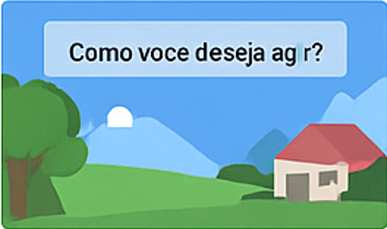

Projetos em Destaque
Receitas Online: Um Catálogo Digital de Sabores
Catálogo interativo de receitas favoritas com fotos, ingredientes e modo de preparo. Interface amigável e responsiva, ideal para todas as idades.
Quiz Climático: Jogo Educativo sobre Mudanças no Planeta
Jogo de perguntas e respostas sobre mudanças climáticas. Desenvolvido com JavaScript para promover conscientização ambiental de forma divertida.

Sistema Solar Interativo com Scratch
Exploração educativa dos planetas do sistema solar, com anímações e interações criadas no Scratch.